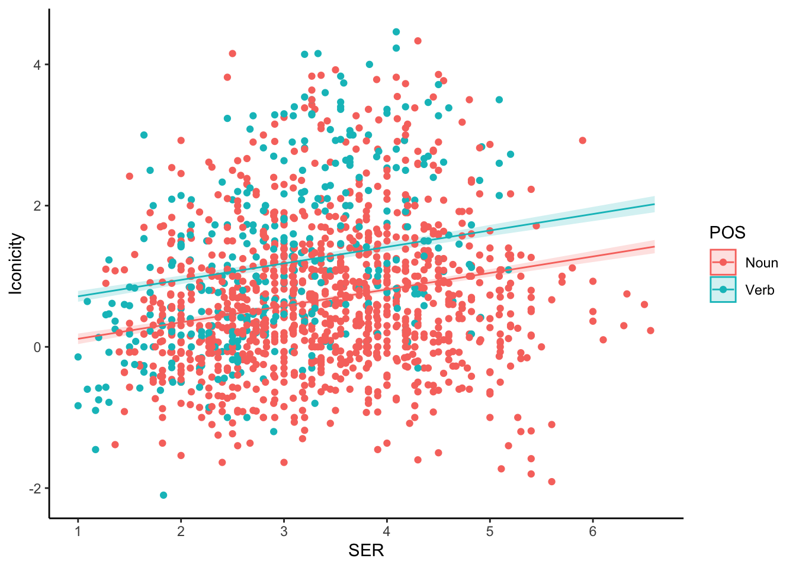
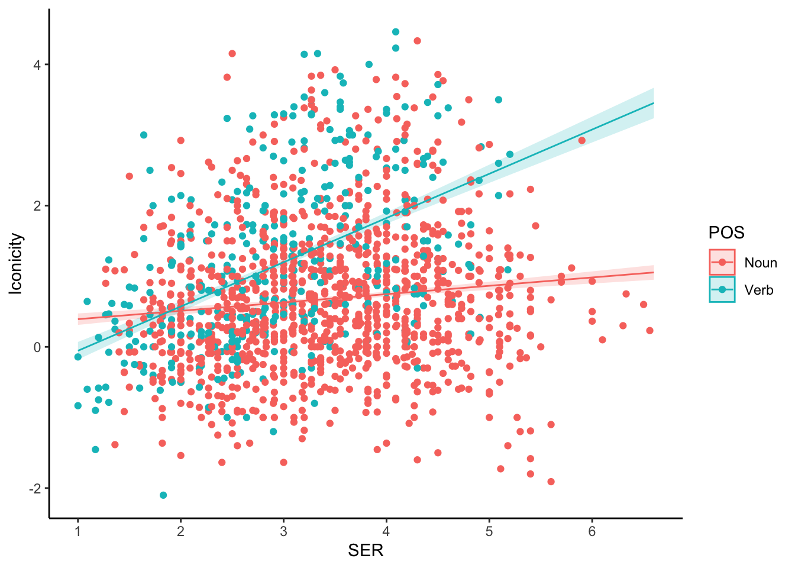
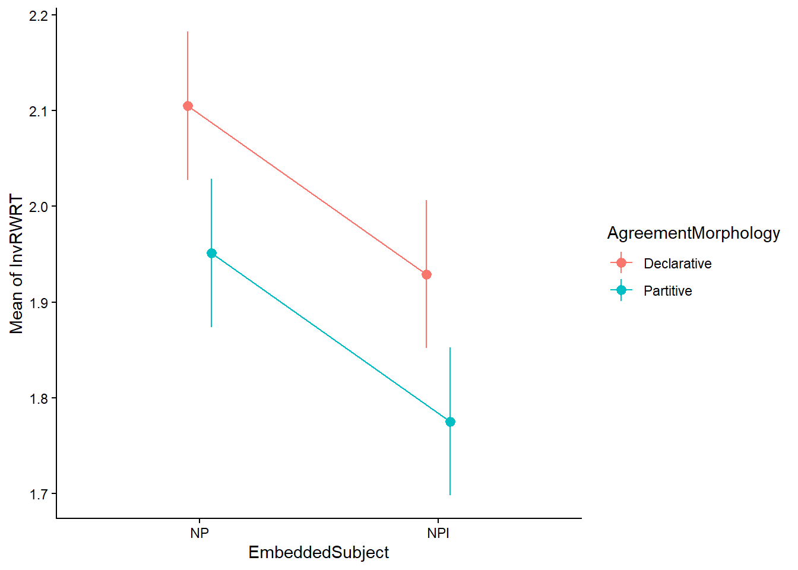
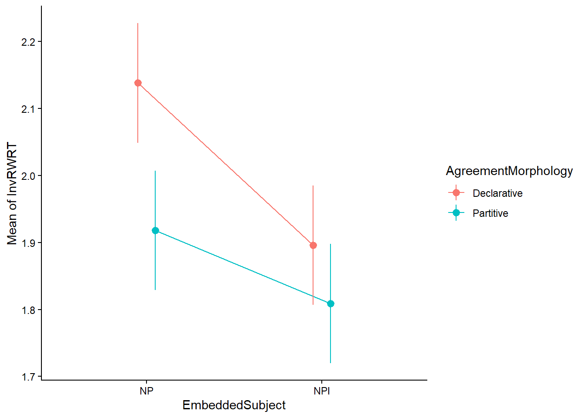

library(tidyverse)
iconicity<-read.csv('https://osf.io/43btm/download')Multiple Linear Regression: Interactions
As described during the last lecture, interactions in a model reflect that the effect of one predictor depends on the level (categorical) or value (continuous) of one or more other predictors.
With two predictors, we discussed a model including and interaction between two predictors \(X_1\) and \(X_2\) would look as follows:
\[ Y=b_0+b_1X_1+b_2X_2+b_3X_1X_2 \]
with \(b_3\) coefficient indicating the strength of the interaction.
Let’s look at a few examples of two combinations of predictors.
Interaction with one categorical and one continuous predictor (Categorical*Continuous)
To illustrate this, we use the Iconicity model as described in [Winter (2019) Chapter 8.2, based on the study in (Winter et al. 2017). Read through the book chapters to see a similar analysis.
Bodo Winter made all data used in the book available in an Open Source Foundation (OSF) directory, from which it can be downloaded directly from R.
Description of the dataset (see full details in Chapter 6 of (Winter 2019):
Iconicity: degree to which a word form resembles the meaning of a word, based on a rating scale. E.g: onomatopoeic words such as bang and beep are iconic because they imitate the sounds these words describe. This is the measured or outcome variable.
SER: Sensory experience rating for a particular word as extracted from a rating study.
POS (Part of Speech): Lexical categoryPosition in the sentence where the word was used.
For the analysis we will look at a subset of Noun and Verb.
icon<-iconicity %>% filter(POS %in% c("Noun","Verb"))If we fit a model with both SER and POS as predictors as a reference and look at the effects:
library(ggeffects)
library(ggiraphExtra)
m1<-lm(Iconicity~POS+SER,data=icon)
summary(m1)
Call:
lm(formula = Iconicity ~ POS + SER, data = icon)
Residuals:
Min 1Q Median 3Q Max
-3.0956 -0.7210 -0.1233 0.6146 3.6902
Coefficients:
Estimate Std. Error t value Pr(>|t|)
(Intercept) -0.11935 0.10040 -1.189 0.235
POSVerb 0.60159 0.06388 9.418 <2e-16 ***
SER 0.23319 0.02789 8.362 <2e-16 ***
---
Signif. codes: 0 '***' 0.001 '**' 0.01 '*' 0.05 '.' 0.1 ' ' 1
Residual standard error: 1.045 on 1476 degrees of freedom
(782 observations deleted due to missingness)
Multiple R-squared: 0.08226, Adjusted R-squared: 0.08102
F-statistic: 66.15 on 2 and 1476 DF, p-value: < 2.2e-16ggPredict(m1, terms=c("POS","SER"),se = TRUE) + theme_classic()
Interpretation of the plot and coefficients are as per last lecture, with same slope (effect of SER) for both levels of POS but with a shift between them.
Let’s look now at what happens if we introduce the interaction in the model:
m2<-lm(Iconicity~POS*SER,data=icon)
summary(m2)
Call:
lm(formula = Iconicity ~ POS * SER, data = icon)
Residuals:
Min 1Q Median 3Q Max
-2.8448 -0.7043 -0.1257 0.5864 3.5845
Coefficients:
Estimate Std. Error t value Pr(>|t|)
(Intercept) 0.27394 0.11065 2.476 0.01341 *
POSVerb -0.95542 0.20971 -4.556 5.65e-06 ***
SER 0.11817 0.03108 3.801 0.00015 ***
POSVerb:SER 0.50838 0.06535 7.780 1.36e-14 ***
---
Signif. codes: 0 '***' 0.001 '**' 0.01 '*' 0.05 '.' 0.1 ' ' 1
Residual standard error: 1.025 on 1475 degrees of freedom
(782 observations deleted due to missingness)
Multiple R-squared: 0.1184, Adjusted R-squared: 0.1166
F-statistic: 66.05 on 3 and 1475 DF, p-value: < 2.2e-16ggPredict(m2, terms=c("POS","SER"),se = TRUE) + theme_classic()
As you can see, allowing the model fit to account for an interaction allows a variability of the slope or effect of SER for each of the levels of the other predictor. The two lines are not parallel now. The sensory experience has a different impact on Iconicity for Nouns compared to Verbs.
Ignoring a data interaction when present in the data leads to incorrect interpretation of the fit results.
The fitted model is:
\[ Iconicity=0.274-0.955\times POS_{Verb}+0.118\times SER+0.508\times POS_{Verb}\times SER\]
Let’s check what every coefficient means:
\(b_0\) - intercept: corresponds to the Iconicity for a Noun (POS=0) for a word with Sensory Experience Rating = 0. Note that this is not directly interpretable, since SER=0 is not even possible for this rating.
\(b_1\) - slope coefficient for POS. Represents the effect in the Noun-Verb difference for words with SER=0. If you were to extend the plot above to the left to SER = 0, you can see that the lines for Verb would be below the line for Noun.
\(b_2\) - slope coefficient for SER. Represents the slope of the SER only in the case that POS=0 (Noun). So 0.118 is the slope of the red curve
\(b_3\) - indicates the change in the slope of SER when POS=1 (Verb), so the slope of the green curve is \(b_2+b_3=0.118+0.508=0.626\).
Centering continuous predictors
A simpler way to interpret intercepts when involving continuous predictors can be done if the predictors are centered.
Centering predictors involves substracting the mean from all the values. It does not affect the model fit quality, but the coefficients become directly interpretable. Let’s create a new variable centering SER called SER_c and fit a new model with the centered variable
icon<-icon %>%
mutate(SER_c=SER-mean(SER, na.rm=TRUE))
m2_c<-lm(Iconicity~POS*SER_c, data=icon)
summary(m2_c)
Call:
lm(formula = Iconicity ~ POS * SER_c, data = icon)
Residuals:
Min 1Q Median 3Q Max
-2.8448 -0.7043 -0.1257 0.5864 3.5845
Coefficients:
Estimate Std. Error t value Pr(>|t|)
(Intercept) 0.66423 0.03102 21.414 < 2e-16 ***
POSVerb 0.72371 0.06456 11.209 < 2e-16 ***
SER_c 0.11817 0.03108 3.801 0.00015 ***
POSVerb:SER_c 0.50838 0.06535 7.780 1.36e-14 ***
---
Signif. codes: 0 '***' 0.001 '**' 0.01 '*' 0.05 '.' 0.1 ' ' 1
Residual standard error: 1.025 on 1475 degrees of freedom
(782 observations deleted due to missingness)
Multiple R-squared: 0.1184, Adjusted R-squared: 0.1166
F-statistic: 66.05 on 3 and 1475 DF, p-value: < 2.2e-16ggPredict(m2_c, terms=c("POS","SER"),se = TRUE) + theme_classic()
The fitted model is:
\[ Iconicity=0.664+0.724\times POS_{Verb}+0.118\times SER_c+0.508\times POS_{Verb}\times SER_c\]
Let’s check what every coefficient means:
\(b_0\) - intercept: corresponds to the Iconicity for a Noun (POS=0) for a word with average SER (SER_c=0). This has not a direct interpretation.
\(b_1\) - slope coefficient for POS. Represents the effect in the Noun-Verb difference for words with average SER.
\(b_2\) - slope coefficient for SER. Represents the slope of the SER only in the case that POS=0 (Noun). Same as before.
\(b_3\) - indicates the change in the slope of SER when POS=1 (Verb). Same as before.
Model selection
The model coefficients show significant simple effects and interactions, and it shows to improve the variance explained compared with a model without interactions.
To compare them we can also perform a model comparison as shown in previous workgroups:
# model without interaction with centered variable
m1_c<-lm(Iconicity~POS+SER_c,data=icon)
anova(m1_c,m2_c)Analysis of Variance Table
Model 1: Iconicity ~ POS + SER_c
Model 2: Iconicity ~ POS * SER_c
Res.Df RSS Df Sum of Sq F Pr(>F)
1 1476 1611.9
2 1475 1548.3 1 63.533 60.523 1.358e-14 ***
---
Signif. codes: 0 '***' 0.001 '**' 0.01 '*' 0.05 '.' 0.1 ' ' 1AIC(m1_c,m2_c) df AIC
m1_c 4 4332.468
m2_c 5 4274.993BIC(m1_c,m2_c) df BIC
m1_c 4 4353.664
m2_c 5 4301.488All three test identify a significant improvement of the model fit including the interaction.
Interaction with two categorical predictors (Categorical*Categorical)
For this example, we will use again the subset of the real data from a Self-Paced Reading study on Negative Polarity Items and complementizer agreement in Basque (Pablos and Saddy 2009).
load('./data/BasqueNPISampleEx5.Rda')The basquenpi_Ex5 data frame contains only the data from Region Number 8 (complementizer position), which was considered the “critical region” for analysis in the experiment.
From the dataframe, we will select a subset of the data columns for the analysis and introduce a transformation to inverse Reading Time (1/RWRT) to normalize the data as discussed in the assignment
- Subject – Factor identifying the participant on the experiment (coded as a number from 1 to 32)
- EmbeddedSubject – Factor/predictor indicating the nature of the embedded subject with the following levels:
- NP – for target sentences with a Noun Phrase as subject
- NPI – for target sentences with a Negative Polarity Item as subject
- Agreement Morphology – Factor/predictor indicating the nature of agreement with the following levels:
- Declarative – for target sentences that contained a complementizer with declarative morphology
- Partitive – for target sentences that contained a complementizer with partitive morphology
- RWRT – Raw (recorded) Reading Time of the word [milliseconds]
- InvRWRT - Inverse Raw Reading Time [in seconds]
dataBasque<-basquenpi_Ex5 %>%
select(Item, Subject, EmbeddedSubject, AgreementMorphology, RWRT) %>%
mutate(InvRWRT=1/(RWRT/1000))Again, let’s fit a model with interaction and a model without and compare them.
library(modelbased)
mbasque_1<-lm(InvRWRT~EmbeddedSubject+AgreementMorphology, data=dataBasque)
summary(mbasque_1)
Call:
lm(formula = InvRWRT ~ EmbeddedSubject + AgreementMorphology,
data = dataBasque)
Residuals:
Min 1Q Median 3Q Max
-1.72727 -0.42095 0.01369 0.38429 2.70877
Coefficients:
Estimate Std. Error t value Pr(>|t|)
(Intercept) 2.1050 0.0394 53.422 < 2e-16 ***
EmbeddedSubjectNPI -0.1757 0.0455 -3.862 0.000122 ***
AgreementMorphologyPartitive -0.1537 0.0455 -3.378 0.000766 ***
---
Signif. codes: 0 '***' 0.001 '**' 0.01 '*' 0.05 '.' 0.1 ' ' 1
Residual standard error: 0.6304 on 765 degrees of freedom
Multiple R-squared: 0.03327, Adjusted R-squared: 0.03074
F-statistic: 13.16 on 2 and 765 DF, p-value: 2.394e-06emm_basque_1<-estimate_means(mbasque_1, by=c("EmbeddedSubject","AgreementMorphology"))
emm_basque_1Estimated Marginal Means
EmbeddedSubject | AgreementMorphology | Mean | SE | 95% CI | t(765)
---------------------------------------------------------------------------
NP | Declarative | 2.10 | 0.04 | [2.03, 2.18] | 53.42
NPI | Declarative | 1.93 | 0.04 | [1.85, 2.01] | 48.96
NP | Partitive | 1.95 | 0.04 | [1.87, 2.03] | 49.52
NPI | Partitive | 1.78 | 0.04 | [1.70, 1.85] | 45.06
Variable predicted: InvRWRT
Predictors modulated: EmbeddedSubject, AgreementMorphologyplot(emm_basque_1) + theme_classic()
And now with the interaction:
mbasque_2<-lm(InvRWRT~EmbeddedSubject*AgreementMorphology, data=dataBasque)
summary(mbasque_2)
Call:
lm(formula = InvRWRT ~ EmbeddedSubject * AgreementMorphology,
data = dataBasque)
Residuals:
Min 1Q Median 3Q Max
-1.69400 -0.44454 0.03515 0.39684 2.67551
Coefficients:
Estimate Std. Error t value
(Intercept) 2.13822 0.04546 47.031
EmbeddedSubjectNPI -0.24224 0.06430 -3.768
AgreementMorphologyPartitive -0.22025 0.06430 -3.426
EmbeddedSubjectNPI:AgreementMorphologyPartitive 0.13307 0.09093 1.463
Pr(>|t|)
(Intercept) < 2e-16 ***
EmbeddedSubjectNPI 0.000177 ***
AgreementMorphologyPartitive 0.000646 ***
EmbeddedSubjectNPI:AgreementMorphologyPartitive 0.143754
---
Signif. codes: 0 '***' 0.001 '**' 0.01 '*' 0.05 '.' 0.1 ' ' 1
Residual standard error: 0.63 on 764 degrees of freedom
Multiple R-squared: 0.03597, Adjusted R-squared: 0.03219
F-statistic: 9.503 on 3 and 764 DF, p-value: 3.618e-06confint(mbasque_2) 2.5 % 97.5 %
(Intercept) 2.04897153 2.22747080
EmbeddedSubjectNPI -0.36846214 -0.11602605
AgreementMorphologyPartitive -0.34646508 -0.09402899
EmbeddedSubjectNPI:AgreementMorphologyPartitive -0.04542944 0.31156911emm_basque_2<-estimate_means(mbasque_2, by=c("EmbeddedSubject","AgreementMorphology"))
emm_basque_2Estimated Marginal Means
EmbeddedSubject | AgreementMorphology | Mean | SE | 95% CI | t(764)
---------------------------------------------------------------------------
NP | Declarative | 2.14 | 0.05 | [2.05, 2.23] | 47.03
NPI | Declarative | 1.90 | 0.05 | [1.81, 1.99] | 41.70
NP | Partitive | 1.92 | 0.05 | [1.83, 2.01] | 42.19
NPI | Partitive | 1.81 | 0.05 | [1.72, 1.90] | 39.79
Variable predicted: InvRWRT
Predictors modulated: EmbeddedSubject, AgreementMorphologyplot(emm_basque_2) + theme_classic()
As you can see, the “slopes” of the effect and coefficient values have change, and so is the interpretation.
The fitted model is:
\[ (1/RWRT)=2.138-2.422\times EmbeddedSubject_{NPI}-2.220\times AgreementMorphology_{Partitive}+0.133\times EmbeddedSubject_{NPI}\times AgreementMorphology_{Partitive}\]
Let’s check what every coefficient means:
\(b_0\) - intercept: corresponds to the Inverse Raw Reading Time for the reference cell in the design: EmbeddedSubject = NP (
EmbeddedSubjectNPI=0) and AgreementMorphology = Declarative (AgreementMorphologyPartitive=0).\(b_1\) - slope coefficient for EmbeddedSubject. Represents the effect in the InvRWRT for EmbeddedSubject=NPI compared with the reference cell (NP, Declarative), while AgreementMorphology = Declarative
\(b_2\) - slope coefficient for AgreementMorphology. Represents the change in InvRWRT for AgreementMorphology = Partitive compared with the reference cell (NP, Declarative), while EmbeddedSubject = NP
\(b_3\) - indicates the change with respect to other coefficients when EmbeddedSubject=NPI and AgreementMorphology = Partitive
So the estimated values are the following:
| Agreement Morphology = Declarative | Agreement Morphology = Partitive | |
| Embedded Subject = NP | \(b_0\) | \(b_0+b_2\) |
| Embedded Subject = NPI | \(b_0+b_1\) | \(b_0+b_1+b_2+b_3\) |
Important
Simple effects vs Main effects
The effects defined by \(b_1\) and \(b_2\) are called simple effects as they represent the impact of a particular variable for a specific level of the other predictor.
In general, in research what is of interest is the effect of a predictor on the average response independently of the other predictors, which is referred to as main effects.
We look at how to evaluate main effects in the next section on Contrast Coding.
Model reporting
Finally, to wrap-up we describe what should be included when reporting a model with interactions:
Report Overall Model: State the model’s significance and fit (\(F, df, p, R^2,R^2_{adj}\))
Provide Table of Coefficients: Use a table for detailed results.
Columns: Unstandardized Coefficients (b), Standard Error (SE), t, p, 95% Confidence Interval (CI).
Rows: Intercept, predictors, and the Interaction Terms
Italics: Italicize statistical symbols like b, SE, t, p, M, SD, R².
Significant Interaction: If the interaction p-value is significant (e.g., < .05), explain that the effect.
- Report the unstandardized coefficients for the interaction (Binteraction) and the main effect it modifies (BIV1).
Explain effects:
When including a continuous predictor and a categorical predictor as moderator describe and plot the slopes at meaningful predicted values to illustrate the interaction
With categorical predictors report the Estimated Marginal Means at the specific categories of the predictors.
If using data transformation, report coefficients directly from the model in transformed units, but Marginal Means in back-transformed units.
Example:
Multiple linear regression was performed to assess the relationship between the Reading Time measured in milliseconds and the nature of the Embedded Subject (NPI or NP) and the Morphological Agreement (Declarative or Partitive).
Raw Reading Time (RWRT) data was transformed using an inverse transformation to address deviations from linear model assumptions observed after fit of RWRT. The model’s intercept
The model (formula: 1/RWRT ~ EmbeddedSubject * AgreementMorphology), explains a statistically significant although weak proportion of the data variance (\(F(3,764)=9.50,p<.001,R^2=0.03\)). The model was fit using treatment coding, with the model’s intercept corresponding to the reference condition EmbeddedSubject = NP and AgreementMorphology = Declarative.
The table below summarizes the coefficients of the model:
term b* SE t p 95%CI (Intercept) 2.14 0.045 47.0 <.001 [2.05, 2.23] EmbeddedSubject_NPI -0.24 0.064 -3.77 <.001 [-0.37, -0.12] AgreementMorphology_Partitive -0.22 0.064 -3.43 <.001 [-0.35, -0.09] EmbeddedSubject_NPI:AgreementMorphology_Partitive 0.13 0.09 1.45 0.144 [-0.05, 0.31]